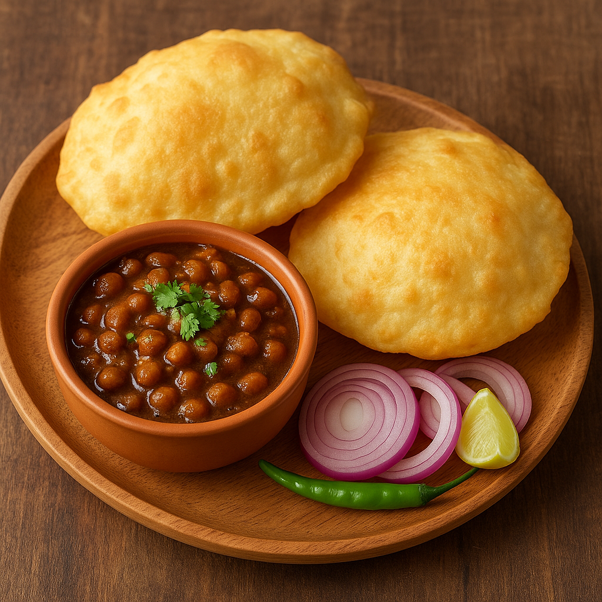

Chole Bhature

Description
Chole Bhature is a beloved North Indian dish known for its bold flavors and indulgent texture. The "Chole" is a spicy chickpea curry simmered in a rich blend of onions, tomatoes, and aromatic spices like cumin, turmeric, and chole masala. Each spoonful bursts with deep, earthy flavors that pair perfectly with the soft, pillowy Bhature—deep-fried fermented flatbreads made from all-purpose flour and yogurt. Often garnished with coriander and served with onions and lemon, this dish is hearty, satisfying, and full of character.
Traditionally enjoyed as a breakfast or brunch item in Punjab and Delhi, Chole Bhature has become a street food icon across India. Its contrasting textures—the soft chickpeas soaked in thick gravy and the crisp, puffy bhature—make it a festive comfort food. Whether you're serving it at a get-together or enjoying it on a relaxed weekend, Chole Bhature never fails to hit the spot. It’s more than a meal—it’s an experience of North Indian culinary richness.
Ingredients
For Chole (Chickpea Curry)
- 1 cup dried chickpeas (or 2 cups canned)
- 2 onions (finely chopped)
- 2 tomatoes (pureed)
- 1 tbsp ginger-garlic paste
- 2 green chilies (slit)
- 2 tsp chole masala
- 1 tsp red chili powder
- 1/2 tsp turmeric powder
- 1 tsp cumin seeds
- Salt to taste
- 2 tbsp oil
For Bhature
- 2 cups all-purpose flour (maida)
- 1/4 cup semolina (sooji)
- 1/2 cup curd (yogurt)
- 1 tsp sugar
- 1/2 tsp baking powder
- Salt to taste
- Water (as needed)
- Oil (for deep frying)
Cooking Instructions
Chole
- Soak dried chickpeas overnight and pressure cook until soft (or use canned chickpeas).
- Heat oil in a pan, add cumin seeds. Once they splutter, add onions and sauté until golden.
- Add ginger-garlic paste and green chilies, cook until raw smell disappears.
- Add tomato puree, chole masala, chili powder, turmeric, and salt. Cook until oil separates.
- Add cooked chickpeas and 1 cup water. Simmer for 15-20 minutes.
- Garnish with coriander leaves.
Bhature
- Mix flour, sooji, salt, sugar, and baking powder in a bowl.
- Add curd and knead into a soft dough, adding water if needed.
- Cover with a damp cloth and rest for 2-3 hours.
- Roll small balls of dough into flat discs.
- Deep fry in hot oil until puffed and golden.
- Serve hot with chole.
Home